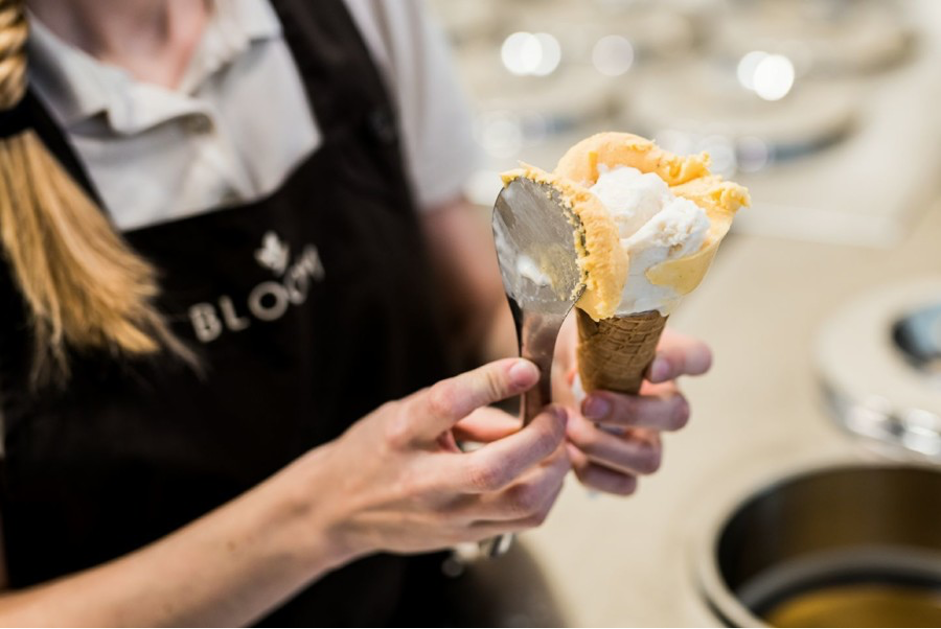

Why I love Italy – my favorite Italy experiences and placesMarch 24th, 2021 When it comes to travelling, there is no other country that has captured my heart like Italy. She has dazzling cities crammed with art and architecture, mesmerizing mountains with epic lakesand hikes, breath-taking blue hues along the southern coast, and enough culture and cuisine to keep anyone entertained. But, more than that, it’s the spirit of Italy – it’s something I can’t describe, but it’s the feeling in the air whenever I’m in the country. Sure, a lot of this is credited to the awe of the landscapes and heritage, but more than that, it’s about the people that make this nation so special. There is a degree of passion and pride in the Italian way of life that is captivating. I’ve written before about some of my favorite hidden gems in Italy – in fact Italy is by far the most documented destination on my website – but I’ve never talked about the experiences which have made me fall in love with Italy. So, here, I want to talk about the people and moments more than the places – some of the moments that made me fall in love with Italy. This is an ever-growing list, as I slowly work my way around every region, but here are some of the most special Italian experiences I’ve had as a traveler, hopefully, some of these will make your next visit even more special. Take a gelato tour through the capital of food Bologna, Emilia-Romagna To me, Bologna is one of the most magical cities in the country, and the friendly locals make it even more special. It’s famous for many types of food (there is more on that later), but a random claim to fame is certainly the Gelato University! Not to be confused of course with one of the oldest universities in the world, which encompasses many corners of the city. Thus, the best way to get to know Bologna well is on a walking-tour, and what better thing to combine with that than Gelato? Experience the masks of the Venice Carnival, Veneto
It was a rainy and misty day when I arrived in Venice, which added even more mystery and intrigue to the masked characters roaming the streets. I’ve been lucky enough to visit Venice a few times, and while it’s certainly busy during the Carnival (when isn’t it?), it wasn’t actually as busy as the summer visits I had enjoyed previously. The Venice Carnival officially dates back to the Renaissance period, and it can be enjoyed in various ways now. From free activities such as walking the beautiful streets and admiring the costumes, to attending lavish ticketed only events and balls. Experience a country-in-a-country at the Vatican or San Marino
There is only one country in the world that can lay claim to having two countries inside of it, and that is Italy. The only other, with one country in its borders is South Africa, where Lesotho is land-locked. The two countries are very small, one being the smallest in the world. Exploring the Vatican is part of visiting Rome, home to the pope, and beautiful art work and architecture when inside, it’s something worth doing in Rome just because it’s right there if for nothing else – although the lines can be quite long. On the other hand, San Marino, surrounded by the Emilia Romagna region, is somewhere I really do recommend you visit – and stay overnight. There is some fascinating history in this micro-nation, such as having its own calendar, two presidents at a time, and it’s strange links with the EU and the Euro, although it’s not officially a part of it. Once the day-trippers go, and sunset comes in, you’ll be rewarded with fantastic views across the landscape. |
|